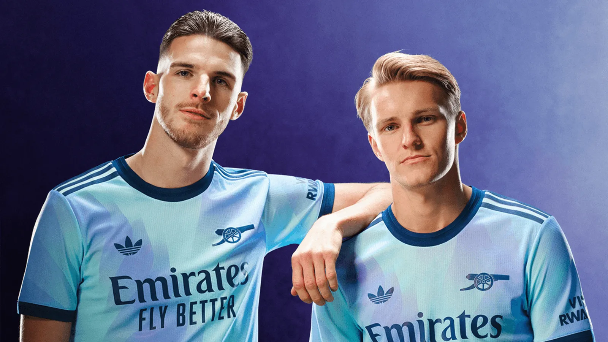
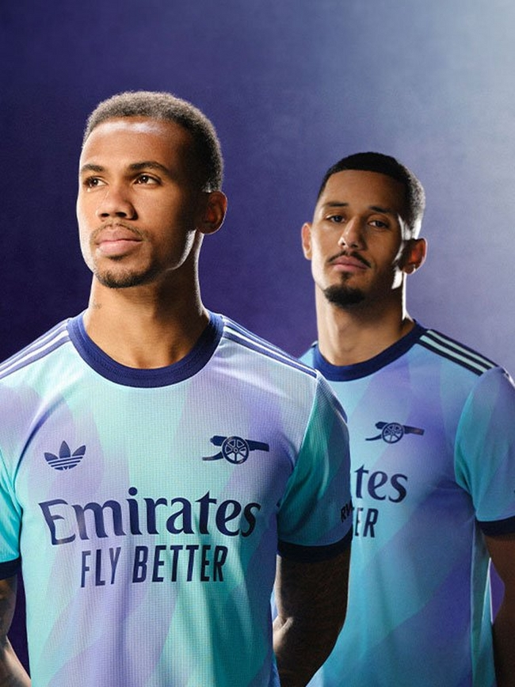

Arsenal's Third Kit: A Bold Statement for the 2024/25 Season
Arsenal's third kit for the 2024/25 season is making waves with its striking and innovative design. Embracing a vibrant and unconventional aesthetic, the kit showcases the club's commitment to blending tradition with modernity. Design and Aesthetics The new third kit features a bold color palette that diverges from Arsenal's traditional hues, incorporating bright and eye-catching shades. The primary color of the kit is a dynamic mix of teal and electric blue, complemented by geometric patterns and subtle gradient effects. This design choice reflects a fresh and youthful spirit, while also paying homage to Arsenal's rich history in football.
